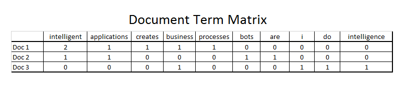

POL40300: Computational Methods
Lecture 4 by Nikolai Gad
München, 9. November 2022
Today's lecture
- R packages
- Introduction to automated text analysis
- Pre-processing text data.
- Analysing text data.
- Possibilities and challenges.
- String manipulation in R
- Next week
R packages
A way to extend the functionality of R.
Contains additional functions, data, and more.
Common distribution channels:
- CRAN (Comprehensive R Archive Network)
- Github
Introduction to automated text analysis
Grimmer, J., & Stewart, B. M. (2013). Text as Data: The Promise and Pitfalls of Automatic Content Analysis Methods for Political Texts. Political Analysis, 21(3), 267–297.
Steps in automated text analysis.
- Collect text data (we will cover this later).
- Pre-processing data (quantifying text).
- Analysing text data.
- (Validate your results)
Pre-processing text data.
Goal is to quantify text so we can do calculations on it.
This necessarily involves reducing complexity.
Some terminology:
- Document/text: Usually the unit of analysis.
- Corpus: Our sample of units to analyse.
- Features/tokens: The entity we use to quantify our texts (most often words.)
Bag of words (unigrams)
We discard the word order in each text completely and only look at which words are used and how often in each text.
We also call this tokenising.
Improve unigrams by using bigrams, trigrams, or n-grams.
More advanced text analysis methods exist, but we will not cover that in this class. (fx. POS/Part-of-speech tags)
The result of this is a
Document-term matrix.
Also known as a document-feature-matrix

document-term-matrix
Additional preprossing:
- Stemming (or more advanced lematisation)
- Removing stop words, punctuation, and rare words.
- Remove capitalisation.
Analysing text data.
|
Scale |
|
Categorical |
Continuous (scaling) |
| Supervised |
Classification (known categories) |
Scaling (known scale) |
| Unsupervised |
Clustering (unkown categories) |
Exploring dimensions (unknown scale) |
Classifying documents into known categories
Goal: Either categorise individual documents or assess overall distribution of documents in each category.
- Dictionary methods
- Build dictionary (list of words that indicate categories of interest).
- Count words from dictionaty.
- Validate results.
- Supervised ML
- Manually code (random) subset of data.
- Apply a learning model (ie. use algorithm to identify pattern in what you coded).
- Validate results.
Validation, relatively straight forward.
Discovering categories and topics
Clustering data - unsupervised methods
- FAC (fully automated clustering)
- CAC (computer assisted clustering)
- No perfect method, but best method depends on RQ!
Challenge to choose number of clusters (again depends on human judgement and purpose, ie. RQ!)
And challenge to validate clusters:
- Labelling data
- Semantic validation
- Predictive validation
- Convergent validation
Scaling political actors
Continuous (nummeric) response variable.
Goal should be to score actors (or objects) on a political dimension that is useful to our analysis.
So the goal is not to prefectly model the text.
- Supervised scaling: fx. Wordscores.
- Unsupervised scaling: fx. wordfish.
General challenge is an asssumption about ideological dominance.
Possibilities with computational text analysis
Four principles of automated text analysis:
- All quantitative models of language are wrong - but some are useful.
- Quantitative models for text amplify resources and augment humans.
- There is no globally best method for automated text analysis.
- Validate, validate, validate!
Principle 1: All quantitative models of Language are wrong – but some are useful.
- Assigning documents into predetermined categories.
- Help discover new and useful categories.
- Measuring theoretically relevant quantities.
Principle 2: Quantitative methods for text amplify resources and augments humans.
- Automatic text analysis is only useful when guided by a theoretically aware researcher.
- It is a tool to help the researcher, but not replace the researcher.
Principle 3: There is no globally best method for automated text analysis.
- RQ should guide the methods used – also when it comes to automated text analysis.
- Different methods are good at different things.
- And the right combination of methods might often be the answer.
Principle 4: Validate, validate, validate.
- Not enough to just report findings, but also need to demonstrate that our findings are valid.
- Some sort of “prove” or strong indication that results actually represent what we claim.
Four principles of automated text analysis:
- All quantitative models of language are wrong - but some are useful.
- Quantitative models for text amplify resources and augment humans.
- There is no globally best method for automated text analysis.
- Validate, validate, validate!
Do you agree with these principles?
Three future paths for automated text analysis in PolSci:
- New texts need new methods: These methods are still in their infancy and needs further development.
- Uncertainty in automated content methods: Methods to measure uncertainty is needed (and being developed, but in many instances still not applied generally)
- New Frontiers: New Texts and New Questions: New RQ can be answered (but we still need to figure out what we can ask with these methods), and new data allows new analysis of old RQ’s.
String manipulation in R
This week's exercise will introduce the stringR package
Help us with very basic string manipulation.
Standardised functions for a lot of the procedures talked about today.
But...
Good to know basics:
- Better understanding of what is going on.
- Enable you to do things exactly the way you want to.
- It might be part of your exam.
Next week: An example of research that use computational text analysis.